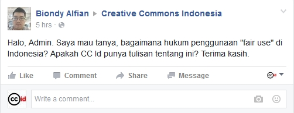
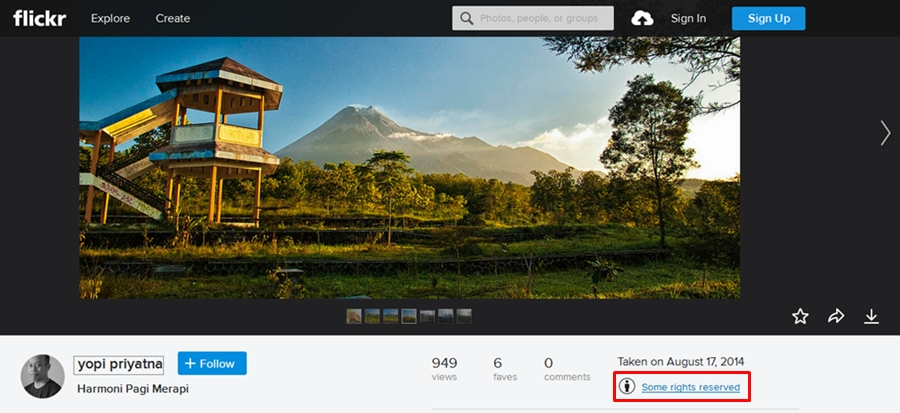
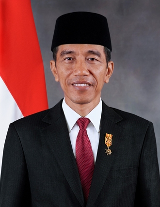

Tanya Jawab Sobat CCID 2 Agustus 2016

Pada facebook Creative Commons Indonesia, Biondy Alfian mengajukan pertanyaan tentang ketentuan “Penggunaan Wajar” di Indonesia:
“Halo, Admin. Bagaimana ketentuan dan penerapan “Penggunaan Wajar” atau “Fair Use” di Indonesia? Apakah Creative Commons Indonesia menyediakan artikel terkait hal ini? Terima kasih”
Secara sederhana, hak cipta merupakan hak eksklusif yang dimiliki oleh seorang pencipta (dapat dipegang oleh dua orang atau lebih, juga dapat dipegang oleh sebuah badan hukum) atas ciptaan-ciptaannya. Hak ini diharapkan dapat melindungi kepentingan-kepentingan pencipta atas ciptaannya. Kepentingan-kepentingan tersebut terdiri atas dua hak yakni hak moral dan hak ekonomi. Hak moral merupakan kepentingan pencipta agar disebutkan namanya dalam setiap penggunaan atas ciptaannya. Sedangkan hak ekonomi berfungsi untuk menjamin segala keuntungan yang dapat diperoleh pencipta dari ciptaannya. Setiap pengguna ciptaan diwajibkan untuk menghormati ketentuan dari kedua hak tersebut. Selain itu, secara tradisional, pengguna juga diharuskan untuk mendapatkan izin terlebih dahulu dari pencipta sebelum menggunakan suatu ciptaan.
Selain ketentuan-ketentuan tentang perlindungan hak, rezim hak cipta Indonesia juga membuat beberapa ketentuan tentang pembatasan perlindungan. Ketentuan ini diharapkan dapat menghidupkan fungsi sosial dari suatu ciptaan. Sehingga pelaksanaan perlindungan hak cipta tidak hanya berfokus pada kepentingan pencipta saja, namun juga pada kepentingan publik. Beberapa ketentuan ini biasa disebut sebagai “Penggunaan Wajar” atau “Fair Use”.

{kind=link}
“Penggunaan Wajar” merupakan beberapa bentuk penggunaan yang dikecualikan dari ketentuan pelanggaran hak cipta. Ketentuan ini dibuat untuk mengontrol beberapa bentuk penggunaan tersebut dibawah kondisi-kondisi tertentu. Misalnya, seseorang dapat membagikan atau menyebarluaskan suatu ciptaan tanpa izin dari pencipta untuk kepentingan pendidikan.
Melalui Undang-Undang Hak Cipta Tahun 2014 Tentang Hak Cipta (2014), rezim hukum hak cipta nasional kita memuat ketentuan-ketentuan tersebut dalam Pasal 43-51 (Tentang Pembatasan Hak Cipta).
Berikut ini adalah beberapa hal substansial dari beberapa pasal-pasal:
- Pasal 43 UUHC 2014
- Perbuatan untuk mengumumkan, mendistribusikan, pengkomunikasian, dan penggandaan materi asli lambang negara dan lagu kebangsaan bukan merupakan pelanggaran hak cipta.
Yang dimaksud dengan materi asli adalah materi yang bukan merupakan ciptaan turunan. Materi ini bukan merupakan buatan pihak yang bukan pencipta asli, dimana buatan tersebut telah dirubah sedemikian rupa sehingga berbeda dengan materi aslinya.

{kind=link}
Untuk lagu kebangsaan, kita dapat menunjuk lagu “Indonesia Raya” sebagai lagu yang dimaksud oleh ketentuan tersebut. Lagu ini dibuat oleh seorang penulis lagu bernama Wage Rudolf (W.R.) Soepratman dan pertama kali dinyanyikan pada Kongres Pemuda II tahun 1928. Tembang ini mengalami perubahan pada tubuh liriknya di tahun 1944, dan aransemen musiknya dibuat pada tahun 1958, masih sama hingga yang digunakan sekarang. Selain itu, lagu ini telah bebas hak cipta sejak tahun 2009, yaitu 70 tahun setelah meninggalnya W.R. Soepratman pada tahun 1938. Penghitungan ini merujuk pada ketentuan masa berlaku hak cipta dari Undang-Undang No. 28 Tahun 2014 Tentang Hak Cipta.
- Pembuatan atau Penyebarluasan ciptaan melalui media teknologi informasi dan komunikasi (Internet) yang tidak bersifat komersial, dan / atau pencipta tersebut menyatakan tidak keberatan atas perbuatan tersebut, tidak dianggap sebagai pelanggaran hak cipta.
Artinya, Anda diperbolehkan melakukan beberapa perbuatan yang ditunjuk oleh ketentuan di atas asal tidak melibatkan kepentingan komersial. Hingga kini belum ada batas yang dapat menjadi tolak ukur penggunaan komersial suatu ciptaan. Namun, untuk menghindari keraguan kita akan mengacu pada pengertiannya yang paling luas, yaitu setiap penggunaan yang memberikan keuntungan finansial harus dianggap sebagai penggunaan komersial (terutama yang dilaksanakan oleh perusahaan yang berorientasi pada keuntungan).
Namun, pasal ini juga menyebutkan bahwa bentuk penggunaan untuk kepentingan komersial sah-sah saja jika pencipta merasa tidak keberatan atas perbuatan tersebut.
Bagaimana kita dapat mengetahui seorang pencipta memperbolehkan penggunaan komersial atas ciptaannya?

Selain dengan memanfaatkan ciptaan yang sudah bebas hak cipta untuk kepentingan komersial, kita juga dapat memanfaatkan ciptaan-ciptaan yang menerapkan lisensi Creative Commons BY (Atribusi) dan / atau BY-SA (Atribusi-BerbagiSerupa). Ciptaan-ciptaan ini biasanya ditempel dengan ketentuan lisensi yang digunakan oleh penciptanya. Dengan ditempelkannya ketentuan lisensi ini, kita dapat mengetahui pencipta memperbolehkan penggunaan untuk kepentingan komersial atas ciptaannya atau tidak. Setiap ciptaan yang menggunakan lisensi ini juga secara langsung memberikan izin kepada pengguna untuk memanfaatkan ciptaan. Untuk memperjelas pelarangan penggunaan ciptaan untuk kepentingan komersial, pencipta dapat menggunakan lisensi CC BY-NC (Atribusi-NonKomersial) atau CC BY-NC-SA (Atribusi-NonKomersial-BerbagiSerupa).
Berikut ini adalah penjelasan tentang ketentuan dari tiap lisensi tersebut:
BY

Anda diizinkan:
- Berbagi: Menyalin dan menyebarluaskan ciptaan.
- Adaptasi: Mengubah, menggubah, dan membuat ciptaan turunan dari suatu ciptaan.
Dengan catatan:
- Atribusi: mencatumkan nama yang sesuai, mencantumkan tautan terhadap lisensi, dan menunjukan perubahan yang dibuat.
BY-SA

Lisensi CC Atribusi-BerbagiSerupa
Anda diizinkan:
- Berbagi: Menyalin dan menyebarluaskan ciptaan.
- Adaptasi: Mengubah, menggubah, dan membuat ciptaan turunan dari suatu ciptaan.
Dengan catatan:
- Atribusi: mencatumkan nama yang sesuai, mencantumkan tautan terhadap lisensi, dan menunjukan perubahan yang dibuat.
- BerbagiSerupa: Apabila Anda menggubah, mengubah, atau membuat ciptaan turunan dari suatu ciptaan, Anda harus menyebarluaskan kontribusi Anda di bawah lisensi yang sama dengan materi asli.
BY-NC

Lisensi CC Atribusi-NonKomersial
Anda diizinkan:
- Berbagi: Menyalin dan menyebarluaskan ciptaan.
- Adaptasi: Mengubah, menggubah, dan membuat ciptaan turunan dari suatu ciptaan.
Dengan catatan:
- Atribusi: mencatumkan nama yang sesuai, mencantumkan tautan terhadap lisensi, dan menunjukan perubahan yang dibuat.
- NonKomersial: Tidak dapat menggunakan ciptaan untuk kepentingan komersial.
BY-NC-SA

Lisensi CC Atribusi-NonKomersial-BerbagiSerupa
Anda diizinkan:
- Berbagi: Menyalin dan menyebarluaskan ciptaan.
- Adaptasi: Mengubah, menggubah, dan membuat ciptaan turunan dari suatu ciptaan.
Dengan catatan:
- Atribusi: mencatumkan nama yang sesuai, mencantumkan tautan terhadap lisensi, dan menunjukan perubahan yang dibuat.
- NonKomersial: Tidak dapat menggunakan ciptaan untuk kepentingan komersial.
- BerbagiSerupa: Apabila Anda menggubah, mengubah, atau membuat ciptaan turunan dari suatu ciptaan, Anda harus menyebarluaskan kontribusi Anda di bawah lisensi yang sama dengan materi asli.

- Segala bentuk penggunaan untuk ciptaan-ciptaan yang merupakan dokumen negara, bukan merupakan pelanggaran hak cipta.
Potret resmi presiden merupakan salah satu wujud dari dokumen negara. Pengguna dibebaskan untuk menggandakan, menyebarluaskan, dan mendistribusikan dokumen negara, termasuk salah satunya adalah peraturan perundang-undangan yang diedarkan. Penggunaan ini harus memperhatikan martabat dan kewajaran dari obyek-obyek yang digunakan.
2. Pasal 44 UUHC 2014
Dalam pasal ini dijabarkan bahwa penggunaan, pengambilan, penggandaan suatu ciptaan atau produk hak terkait secara seluruh atau sebagian yang substantial tidak dianggap sebagai pelanggaran hak cipta apabila digunakan untuk keperluan pendidikan yang diantaranya:
- Pendidikan, penelitian, penulisan karya ilmiah, penulisan laporan, penulisan kritik atau tinjauan suatu masalah dengan tidak merugikan kepentingan yang wajar dari Pencipta atau Pemegang Hak Cipta;
- Ceramah yang hanya untuk tujuan pendidikan dan ilmu pengetahuan.
Informasi lebih lanjut terkait siasat penggunaan ciptaan untuk kepentingan pendidikan dapat anda baca di sini dan di sini.
3. Pasal 45, 46, dan 47 UUHC 2014
Ketiga pasal ini menjabarkan ketentuan-ketentuan terkait jenis-jenis penggandaan terhadap ciptaan-ciptaan tertentu yang dapat dianggap sebagai penggunaan wajar. Ketentuan-ketentuannya adalah sebagai berikut:
Program Komputer
- Penggandaan sebanyak satu salinan program komputer oleh pengguna yang sah dapat dilakukan tanpa izin pencipta atau pemegang hak cipta untuk tujuan penelitian dan pengembangan program komputer tersebut.
- Penggandaan sebanyak satu salinan program komputer oleh pengguna yang sah dapat dilakukan tanpa izin pencipta atau pemegang hak cipta sebagai arsip atau cadangan untuk mencegah kehilangan program komputer yang didapat secara sah tersebut. Salinan tersebut harus dimusnahkan apabila penggunaan program komputer telah berakhir.
Penggandaan Untuk Kepentingan Pribadi
Pengguna dapat menggandakan ciptaan sebanyak satu salinan untuk kepentingan pribadi tanpa izin dari pencipta atau pemegang hak cipta, dengan kondisi:
- Bukan seluruh atau bagian substansial dari suatu buku atau notasi musik.
- Bukan seluruh atau bagian substasian dari suatu basis data dalam bentuk digital.
Penggandan Untuk Kepentingan Perpustakaan
Setiap perpustakaan atau lembaga arsip yang tidak bertujuan komersial diperbolehkan menggandakan ciptaan sebanyak satu salinan tanpa izin dari pencipta atau pemegang hak cipta, dengan kondisi:
- Perpustakaan atau lembaga arsip dapat menjamin ciptaan hanya digunakan untuk tujuan pendidikan atau penelitian.
- Penggandaan dilakukan secara terpisah, dan bukan merupakan kegiatan yang berulang. Jika dilakukan berulang, kegiatan tersebut harus bukan kegiatan yang saling berhubungan.
- Penggandaan dimaksudkan untuk pemeliharaan, penggantian salinan yang diperlukan, atau penggantian salinan yang hilang.
- Penggandaan dimaksudkan untuk pertukaran informasi antara perpustakaan atau lembaga arsip.
4. Pasal 48 UUHC 2014
Pasal ini menjelaskan bahwa penggandaan, penyiaran, atau komunikasi ciptaan untuk tujuan informasi** dengan menyebutkan sumber dan nama pencipta** diperbolehkan terhadap ciptaan yang berupa:
- Artikel yang sudah pernah dilakukan pengumuman baik di media cetak maupun di media elektronik.
- Laporan peristiwa aktual.
- Karya ilmiah, pidato, ceramah, atau Ciptaan sejenis yang disampaikan kepada publik.
5. Pasal 49 UUHC 2014
Pasal ini mengatur bahwa penggandaan ciptaan untuk sementara dapat dilakukan tanpa dianggap sebagai pelanggaran hak cipta. Penggandaan yang dimaksudkan adalah untuk tujuan pemeliharaan ciptaan, misalnya dengan mengunggah ciptaan tersebut ke tempat penyimpanan data di internet seperti Dropbox atau Internet Archive. Penggandaan ini dilakukan dengan mengantongi izin dari Pencipta. Namun, berkas-berkas digital hasil penggandaan ciptaan tersebut harus mempunyai mekanisme penghapusan otomatis sehingga tidak dapat ditampilkan kembali.
Teks lengkap dari ketentuan-ketentuan ini dapat Anda baca dengan mengakses UUHC 2014.
Semoga membantu. Pokoknya Creative Commons!
Tags:
Oleh: Hilman Fathoni
2 Aug 2016Kategori:
Berita Terbaru
- Lokakarya Hak Cipta dan Lisensi Creative Commons di Pekanbaru
- Pengumuman Resmi: Hasil Akhir Training of Trainers Creative Commons Indonesia
- Literatur tentang Model Bisnis Terbuka "Made With CC"
- Data dan Artikel Ilmiah Terbuka dari PLOS!
- Konten Format Model 3 Dimensi Berilsensi CC di Platform Sketchfab